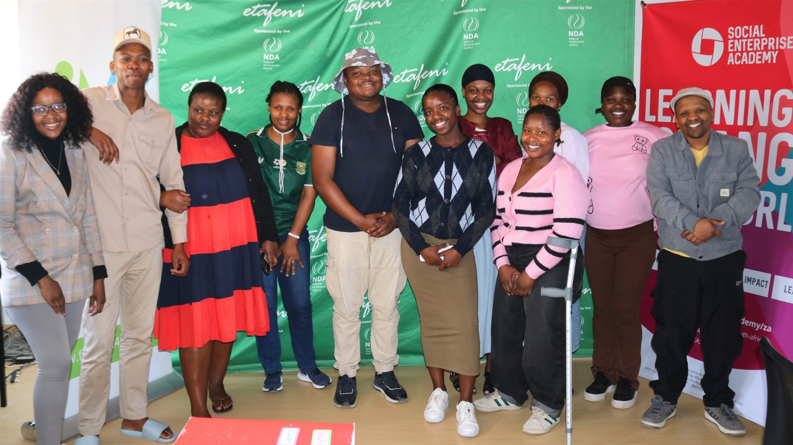
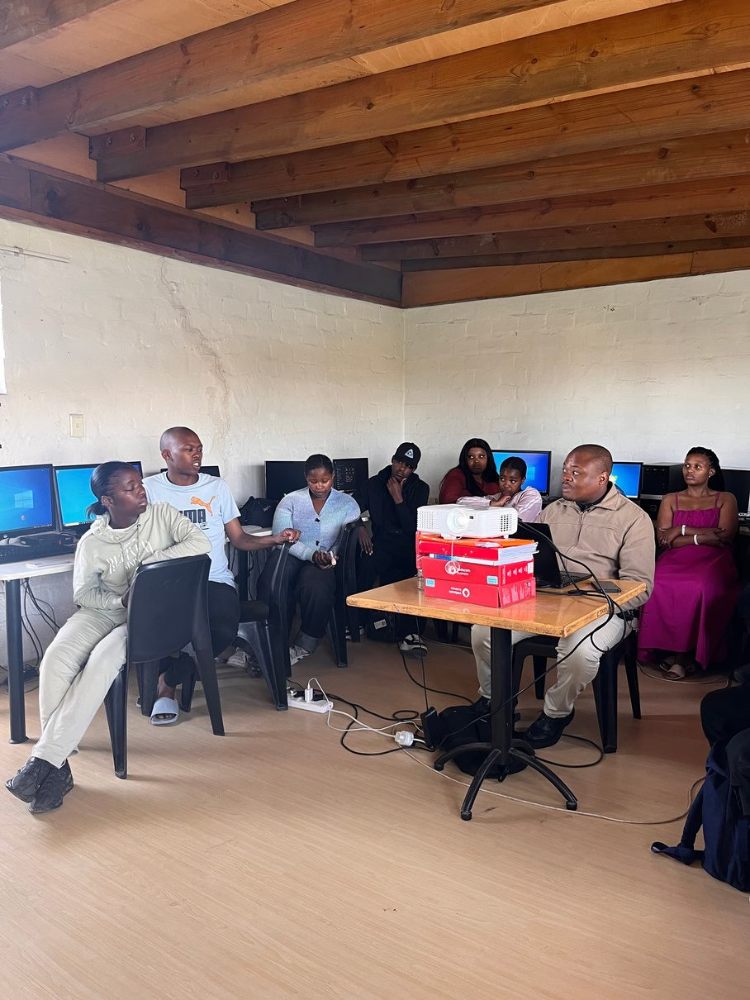

AI for Income
Master AI tools like ChatGPT, and automation platforms to deliver professional services and boost your productivity as a digital freelancer.


Digital Income Youth Accelerator Programme · 500+ participants have already joined
Learn AI, digital marketing, e-commerce and entrepreneurship skills while building a professional portfolio that helps you find clients, employment and new income opportunities.
Programme introduction
The Digital Income Accelerator Youth Programme is implemented by Social Enterprise Academy Africa. Social Enterprise Academy South Africa (SEA SA) is a registered non-profit organisation and Level 1 B-BBEE entity. It delivers transformational learning, leadership development and strategic growth programmes for individuals and organisations driving social change.
As part of a global network, SEA SA equips local social entrepreneurs with practical skills and sustainable business models that help address critical socio-economic challenges.
Start Your JourneyWhy we built it
The Digital Income Accelerator Youth Programme didn’t start in a boardroom — it started with young South Africans who attended our AI Webinar Series and asked for more.
After hosting two webinar series, the feedback was clear: people wanted greater flexibility, deeper learning, and a structured pathway to generating real income, not just acquiring knowledge.
So we listened. We evolved the programme into a self-paced LMS experience that lets you learn on your schedule, build real projects, and walk away with a portfolio that opens doors.
Programme curriculum
Six practical, income-focused modules designed to take you from beginner to earning professional.
Master AI tools like ChatGPT, and automation platforms to deliver professional services and boost your productivity as a digital freelancer.
Create compelling content, build content calendars, manage social media profiles, and grow audiences for yourself and paying clients.
Build online stores, create and sell digital products, and set up payment systems that generate income while you sleep.
Launch and manage Facebook, Instagram and Google ad campaigns. Learn targeting, budgeting and reporting — skills clients pay well for.
Package your skills into services, set your pricing, attract clients, and build a sustainable freelance or micro-business model.
Create a professional website, showcase your projects, and build a portfolio that gets you hired or wins you clients — your digital CV.
Programme outcomes
Tangible, real-world assets and skills that open doors.
How it works
Five clear steps from zero to earning — at your own pace.
Complete self-paced modules on the LMS platform
Apply skills through guided hands-on exercises
Create real projects that showcase your abilities
Package and price your skills for the market
Land clients, employment or freelance income
Meet your facilitator
Digital Marketing Expert · Entrepreneur · Educator
He is a digital marketing expert, entrepreneur, and educator. As the founder of SK Academy and Nondiya FASA, he has established himself as a leading authority in digital marketing and entrepreneurship, with years of experience building sustainable online presence, driving real results, and fostering meaningful connections. His expertise spans social media, SEO, content creation, and performance marketing, and he is also a certified Meta Ads and Google Ads Media Buyer. Through SK Academy, he provides training and mentorship programmes that empower individuals to succeed in digital marketing.

Apply for the Programme
Limited spaces available. Apply today and start your digital income journey.
By applying you agree to our privacy policy. We never share your data.
Frequently asked questions
Everything you need to know before you apply.
This programme is designed for youth aged 18-35 who want to build digital income skills. Whether you’re a student, recent graduate, job seeker, or aspiring entrepreneur — if you have ambition and access to a device, you qualify.
Yes, 100% online. The programme is delivered through our Learning Management System (LMS), which you can access from any device — laptop, tablet, or smartphone. You learn at your own pace, from anywhere in South Africa.
No prior experience is required. The programme is designed to take you from beginner to competent practitioner. All you need is a willingness to learn, a device, and an internet connection. We start from the basics and build up progressively.
Absolutely. You’ll have access to facilitator support from Lungisa Sobhuwa, as well as a peer community of fellow participants. You won’t be learning alone — there’s a support structure to help you stay on track and overcome challenges.
Yes — portfolio development is a core part of every module, not an afterthought. By the time you complete the programme, you’ll have a professional portfolio website, real project samples, and client-ready work you can show immediately.
The programme is fully self-paced — you complete it in your own time. Most participants finish within 6–12 weeks when studying part-time. There are no deadlines or expiry dates, so you can go as fast or as slow as your schedule allows.
Find out more
If you're interested in learning more about The Digital Income Accelerator Youth Programme we invite you to contact us directly. We look forward to welcoming you to our community.
Contact usProgramme enquiries
jamy@socialenterprise.academy